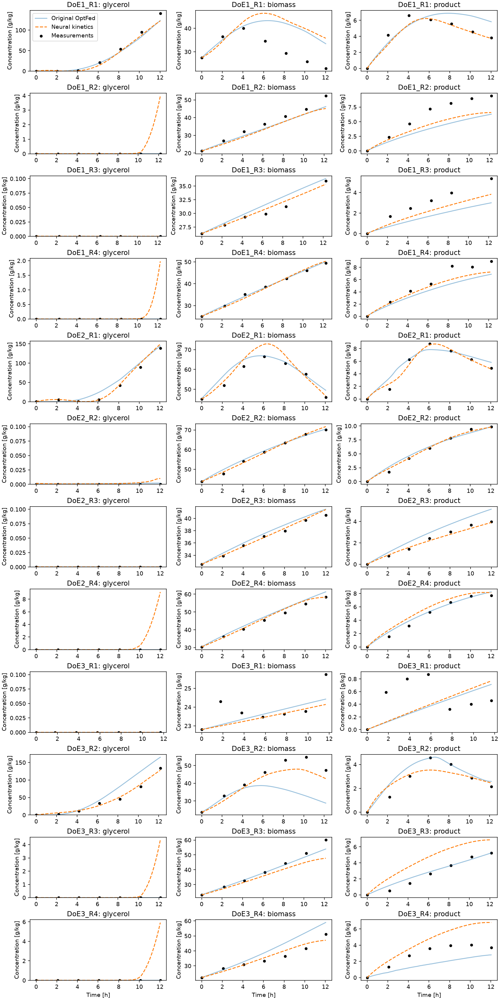

OptFed with neural kinetics¶
The OptFed mechanistic model page fits the reduced OptFed model (Schlögel et al. [1]) to twelve published fed-batch processes. This page uses the same data and ODE structure, but it replaces OptFed’s mechanistic equations and fitted kinetic parameters with a small neural network.
The OptFed reduced model defines equations for the specific substrate (glycerol)
uptake rate and for the fraction of substrate used for maintenance and product
formation (the remainder is available for growth). In the example here we follow
the same structure, but we replace the equations with an MLP that predicts the
glycerol uptake capacity and two allocation fractions (fraction of total uptake
used for maintenance and fraction of remainder used for product). Using OptFed’s
fixed yields (0.627 g biomass per g glycerol and 0.652 g product per g
glycerol) these are then converted into specific rates for growth and product
formation.
Note: As in the original OptFed model we use a fixed Michaelis-Menten constant of
K_G = 0.001 g/kg.
This structure ensures that all rates and concentrations stay non-negative.
The model also tracks the cumulative generation count as a latent state,
using OptFed’s equation. This means that the hybrid model tracks an additional
state for internal use that is neither a concentration nor measured. Hybrax
requires an explicit opt-in for such a state, which is why the training config
below sets allow_stateful_models. OptFed uses this count to allow the model to
describe production inhibition later in the run and we pass it to the network as
input as well.
How the pieces fit¶
The example lives in examples/gallery_optfed_ffnn/:
Data (
../gallery_optfed/data.json) is the imported OptFed collection of the mechanistic example, used unchanged, including itsReactionOde. See the OptFed example page for how it was built.Prepare (
prepare-config.json) points to that file.Train (
train-config.json+custom.py) uses the neural reaction module below, returned bybuild_reaction_module.build_solverandestimate_all_scalesare the same as in the mechanistic example.Forward (
forward-config.json) runs the model inrun/. In the bundled run, that is the selected checkpoint.
The OptFed repository does not specify a license, so its data and the files on
this page derived from it are not covered by Hybrax’s MIT license; all rights
remain with the OptFed authors. examples/gallery_optfed_ffnn/README.md lists
which files that covers.
Define the model¶
The network is an Equinox MLP with five inputs, two hidden layers of four
tanh units and three outputs, 59 trainable parameters in total. Its inputs are
the scaled biomass, glycerol and product concentrations, the scaled
temperature, and the generation count. Its outputs become the uptake capacity
(through a softplus, so it stays positive) and the maintenance and product
fractions (through a sigmoid, so they stay between 0 and 1).
class NeuralReactionModule(RateModule):
"""Learn uptake capacity and sequential glycerol allocation fractions."""
network: eqx.nn.MLP = trainable_field() # Let Hybrax optimize the MLP weights.
glycerol_index: int = eqx.field(static=True)
biomass_index: int = eqx.field(static=True)
product_index: int = eqx.field(static=True)
def __init__(self, *, key, glycerol_index, biomass_index, product_index, **scales):
# One latent state: OptFed's generation count, already of order one.
super().__init__(SCALE_latent=jnp.ones(1), **scales)
self.biomass_index = biomass_index
self.product_index = product_index
self.glycerol_index = glycerol_index
self.network = eqx.nn.MLP(
self.n_modeled_RMCs + self.n_controlled_PVs + 1,
3,
width_size=4,
depth=2,
activation=jax.nn.tanh,
key=key,
)
# Start with nearly constant outputs: an uptake capacity of
# softplus(bias) = 0.1 g glycerol/(g active biomass h); both fractions 0.5.
self.network = eqx.tree_at(
lambda net: (net.layers[-1].weight, net.layers[-1].bias),
self.network,
(
self.network.layers[-1].weight * 0.01,
jnp.asarray([jnp.log(jnp.expm1(0.1)), 0.0, 0.0]),
),
)
The last layer starts with small weights, so the initial outputs barely depend
on the inputs. Its biases set those starting outputs: an uptake capacity of
0.1 g glycerol/(g active biomass h) and both fractions at 0.5.
__call__ turns the network outputs into the three rates declared in the
ReactionOde and the derivative of the generation count:
def __call__(self, _t, inputs):
# Concentrations, temperature, and OptFed's generation count.
features = jnp.concatenate(
[
inputs.SCL_modeled_RMCs,
inputs.SCL_controlled_PVs,
inputs.SCL_latent,
]
)
raw = self.network(features)
q_max = jax.nn.softplus(raw[0])
maintenance_fraction, product_fraction = jax.nn.sigmoid(raw[1:])
states = self.unscale_modeled_RMCs(inputs.SCL_modeled_RMCs)
glycerol = jnp.maximum(states[self.glycerol_index], 0.0)
# OptFed's fixed Monod constant, in g/kg. Uptake stops at zero glycerol.
uptake = q_max * glycerol / (1e-3 + glycerol)
remaining = uptake * (1.0 - maintenance_fraction)
production = remaining * product_fraction
growth = remaining - production
# OptFed's fixed yields convert glycerol allocations to specific rates.
rates = jnp.asarray([0.627 * growth, uptake, 0.652 * production])
# Same generation-count ODE as the mechanistic OptFed module.
biomass = jnp.maximum(states[self.biomass_index], 1e-8)
product = jnp.maximum(states[self.product_index], 0.0)
active_biomass = jnp.maximum(biomass - product, 0.0)
growth_rate = (rates[0] + rates[2]) * active_biomass / biomass
return ReactionOutputs(
SCL_modeled_ReactionOde_rates=self.scale_modeled_ReactionOde_rates(rates),
# Feeds and sampling stay controlled by the imported dataset.
SCL_modeled_Inflows_rates=jnp.zeros(0),
SCL_modeled_Outflows_rates=jnp.zeros(0),
SCL_latent_derivative=jnp.asarray([growth_rate / jnp.log(2.0)]),
)
The dataset prescribes feeds and sampling, so the module returns empty modeled inflow and outflow rates. The generation count uses a latent scale of 1, because it already stays of order one over these processes.
Complete custom.py
"""Replace OptFed's kinetic rate laws with a small neural network."""
import diffrax
import equinox as eqx
import jax
import jax.numpy as jnp
import numpy as np
from hybrax.format.mechanistic import build_rhs_ode
from hybrax.train import EstimatedScales, RateModule, ReactionOutputs, trainable_field
class NeuralReactionModule(RateModule):
"""Learn uptake capacity and sequential glycerol allocation fractions."""
network: eqx.nn.MLP = trainable_field() # Let Hybrax optimize the MLP weights.
glycerol_index: int = eqx.field(static=True)
biomass_index: int = eqx.field(static=True)
product_index: int = eqx.field(static=True)
def __init__(self, *, key, glycerol_index, biomass_index, product_index, **scales):
# One latent state: OptFed's generation count, already of order one.
super().__init__(SCALE_latent=jnp.ones(1), **scales)
self.biomass_index = biomass_index
self.product_index = product_index
self.glycerol_index = glycerol_index
self.network = eqx.nn.MLP(
self.n_modeled_RMCs + self.n_controlled_PVs + 1,
3,
width_size=4,
depth=2,
activation=jax.nn.tanh,
key=key,
)
# Start with nearly constant outputs: an uptake capacity of
# softplus(bias) = 0.1 g glycerol/(g active biomass h); both fractions 0.5.
self.network = eqx.tree_at(
lambda net: (net.layers[-1].weight, net.layers[-1].bias),
self.network,
(
self.network.layers[-1].weight * 0.01,
jnp.asarray([jnp.log(jnp.expm1(0.1)), 0.0, 0.0]),
),
)
def __call__(self, _t, inputs):
# Concentrations, temperature, and OptFed's generation count.
features = jnp.concatenate(
[
inputs.SCL_modeled_RMCs,
inputs.SCL_controlled_PVs,
inputs.SCL_latent,
]
)
raw = self.network(features)
q_max = jax.nn.softplus(raw[0])
maintenance_fraction, product_fraction = jax.nn.sigmoid(raw[1:])
states = self.unscale_modeled_RMCs(inputs.SCL_modeled_RMCs)
glycerol = jnp.maximum(states[self.glycerol_index], 0.0)
# OptFed's fixed Monod constant, in g/kg. Uptake stops at zero glycerol.
uptake = q_max * glycerol / (1e-3 + glycerol)
remaining = uptake * (1.0 - maintenance_fraction)
production = remaining * product_fraction
growth = remaining - production
# OptFed's fixed yields convert glycerol allocations to specific rates.
rates = jnp.asarray([0.627 * growth, uptake, 0.652 * production])
# Same generation-count ODE as the mechanistic OptFed module.
biomass = jnp.maximum(states[self.biomass_index], 1e-8)
product = jnp.maximum(states[self.product_index], 0.0)
active_biomass = jnp.maximum(biomass - product, 0.0)
growth_rate = (rates[0] + rates[2]) * active_biomass / biomass
return ReactionOutputs(
SCL_modeled_ReactionOde_rates=self.scale_modeled_ReactionOde_rates(rates),
# Feeds and sampling stay controlled by the imported dataset.
SCL_modeled_Inflows_rates=jnp.zeros(0),
SCL_modeled_Outflows_rates=jnp.zeros(0),
SCL_latent_derivative=jnp.asarray([growth_rate / jnp.log(2.0)]),
)
def build_reaction_module(*, seed, training_parent_collection, **kwargs):
"""Keep OptFed's scales and replace only the rate calculation."""
process = next(iter(training_parent_collection.processes.values()))
rhs = build_rhs_ode(process)
return NeuralReactionModule(
key=jax.random.key(seed),
glycerol_index=list(rhs.name_modeled_RMCs).index("glycerol"),
biomass_index=list(rhs.name_modeled_RMCs).index("biomass"),
product_index=list(rhs.name_modeled_RMCs).index("product"),
**{name: value for name, value in kwargs.items() if name.startswith("SCALE_")},
)
def build_solver(config):
"""Reuse the OptFed gallery's solver."""
del config
return diffrax.Kvaerno5()
def estimate_all_scales(runtime_data, target_names, config):
"""Reuse OptFed's maximum-based scales, which also weight the default loss."""
del target_names, config
evidence = runtime_data.control_scale_evidence()
indices = range(len(runtime_data.process_order))
def axis_scale(traces):
return jnp.asarray(
[max(float(np.max(np.abs(values))), 1e-2) for values in traces]
)
# Empty arrays describe quantities absent from this dataset/model.
return EstimatedScales(
SCALE_modeled_RMCs=jnp.asarray(
[
max(
np.abs(runtime_data.raw_state_trace(i, name)[1]).max()
for i in indices
)
for name in runtime_data.rhs_ode.name_modeled_RMCs
]
),
SCALE_V_in_cumulative=jnp.asarray(
max(runtime_data.initial_volume(i) for i in indices)
),
SCALE_modeled_Inflows_cumulative=jnp.zeros(0),
SCALE_modeled_Outflows_cumulative=jnp.zeros(0),
SCALE_controlled_Inflows_cumulative=axis_scale(evidence.cumulative_Inflows),
SCALE_controlled_Inflows_rates=axis_scale(evidence.Inflow_rates),
SCALE_controlled_Inflows_Cin=jnp.maximum(
jnp.max(jnp.abs(jnp.asarray(evidence.controlled_Inflow_Cin)), axis=0), 1.0
),
SCALE_controlled_Outflows_cumulative=jnp.zeros(0),
SCALE_controlled_Outflows_rates=jnp.zeros(0),
SCALE_controlled_PVs=axis_scale(evidence.PVs),
SCALE_modeled_Inflows_Cin=jnp.zeros((0, 3)),
SCALE_modeled_ReactionOde_rates=jnp.ones(3),
SCALE_modeled_Inflows_rates=jnp.zeros(0),
SCALE_modeled_Outflows_rates=jnp.zeros(0),
)
Prepare and train¶
Train with Adam for 500 epochs at a constant learning rate of 0.03. Omitting
batch_size uses all twelve processes in each update, so 500 epochs give 500
updates. Save a checkpoint every 10 epochs. The solver (Kvaerno5 with
rtol=1e-4, atol=1e-6), the state scales that weight the default
concentration loss, and the control scales all match the
mechanistic example.
Because the model has a latent state, the generation count, the config sets
allow_stateful_models.
{
"data": {
"prepared": "prepared",
"targets": [
"biomass",
"glycerol",
"product"
],
"target_source": "reactor_components"
},
"custom_py": "custom.py",
"train": {
"epochs": 500,
"seed": 0,
"learning_rate": 0.03,
"allow_stateful_models": true,
"shuffle": false
},
"solver": {
"max_steps": 100000,
"rtol": 1e-4,
"atol": 1e-6
},
"checkpoint": {
"every": 10
},
"output": {
"dir": "run",
"predictions": "parents"
}
}
The example bundles the selected checkpoint in examples/gallery_optfed_ffnn/run/.
To refit the model, switch to the example directory, prepare the data, and
train. Training takes about 10 minutes on one CPU device. The --overwrite flag
replaces the bundled run with the new fit:
cd examples/gallery_optfed_ffnn
hybrax prepare --config prepare-config.json --output-dir prepared
hybrax train --config train-config.json --overwrite
INFO __main__: training complete: first_mean_loss=0.0878162 last_mean_loss=0.00553992 delta=-0.0822763
Run directory: docs/source/_data/out/runs/gallery_optfed_ffnn/run/
As in the mechanistic example, evaluate each saved checkpoint on the measured
concentrations and select the one with the lowest combined NRMSE. The NRMSE
divides each species’ error by its largest observed concentration. The
select_checkpoint function in examples/gallery_optfed/run.py does this, and
this example’s run.py calls it. This is selection on training data, not
validation on held-out processes.
The output prints the ordinary R² for each species and for the product-to-biomass ratio P/X, computed on raw concentrations. Its last line is the lowest predicted concentration, which shows whether any prediction dips below zero.
Selected checkpoint: step_00500
biomass R2 = 0.9021
glycerol R2 = 0.9873
product R2 = 0.8455
P_X R2 = 0.7279
Lowest predicted concentration: 0 g/kg
Compare with OptFed¶
The table scores the fitted network (labelled “Neural kinetics”) and the
original OptFed model on the same 83 measurement rows, using the score
definitions of the
mechanistic example. The X, P and P/X
R² of the original model are the fit R² values of 0.83, 0.82 and 0.73 reported in
Fig. 2b of the OptFed paper [1]. The other scores of the
original model are computed from predictions that we obtained by running the
authors’ fitting script (code/01_fit.py) from the OptFed repository.
The mechanistic example fits the same data with its eleven parameters and reaches similar results.
| Total R² | Total NRMSE | X R² | P R² | P/X R² | P/X NRMSE | |
|---|---|---|---|---|---|---|
| Model | ||||||
| Original OptFed | 0.856 | 0.0885 | 0.834 | 0.822 | 0.734 | 0.152 |
| Neural kinetics | 0.898 | 0.0745 | 0.902 | 0.845 | 0.728 | 0.154 |
The network fits the three concentrations more closely than original OptFed, while its product-to-biomass ratio is slightly less accurate. The loss compares each species separately and never sees the ratio, so a lower concentration error does not have to carry over to P/X. Original OptFed was fitted to rates estimated from the measurements. The network is trained and selected on the concentrations themselves, so the concentration scores favour the network.
These are the training processes, so the scores measure goodness of fit, not performance on unseen processes. With 59 parameters against original OptFed’s eleven fitted ones, a closer fit to the training processes is expected.
Inspect the fitted trajectories¶
The plot compares the fitted network, the original OptFed model and the measurements. Original OptFed curves are semi-transparent solid lines; the network’s curves are dashed.

Run the example locally¶
The prepare and train commands above write to prepared/ and run/ inside
examples/gallery_optfed_ffnn/. To simulate the bundled model, use the same
directory:
hybrax forward --config forward-config.json --output-dir run/forward
The bundled forward configuration loads run, which points to its latest
checkpoint. After a refit, that is the final epoch. To simulate a specific
checkpoint, set models to its directory, for example
["run/checkpoints/step_00500"].
The optional run.py script prepares, trains, selects the checkpoint with the
lowest concentration NRMSE, and runs that checkpoint:
python run.py
This page’s executed run is in
docs/source/_data/out/runs/gallery_optfed_ffnn/run/.
References¶
Schlögel, G., Lück, R., Kittler, S., Spadiut, O., Kopp, J., Zanghellini, J., & Gotsmy, M. (2024). Optimizing bioprocessing efficiency with OptFed: Dynamic nonlinear modeling improves product-to-biomass yield. Computational and Structural Biotechnology Journal, 23, 3651-3661. doi:10.1016/j.csbj.2024.09.024.